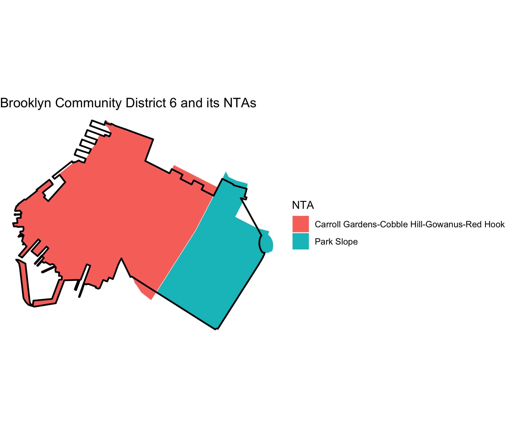

The nycxwalks package provides crosswalk tables for fifteen New York City geographies. The tables show how the geographies overlap. The geographies are:
- community districts, police precincts, sanitation districts, fire battalions, school districts, and health center districts
- city council, congressional, state assembly, and state senate districts
- business improvement districts, historic districts, and industrial business zones
- Neighborhood Tabulation Areas (NTAs) and Modified ZIP Code Tabulation Areas
For each pair of features that overlap, the tables give the area of the overlap and the share of each feature that the overlap covers. Use these shares to move data from one geography to another. The package also includes the boundaries that nycbuildxwalks used to compute the tables.
nycbuildxwalks built the tables. nycbuildxwalks is an R port of the Python NYC geography crosswalks tool by Nathan Storey at MODA-NYC. That tool builds on the concepts and data aggregation methods of the BetaNYC NYC Boundaries Map. The boundaries come from the NYC Department of City Planning, NYC Open Data, and the NYC Economic Development Corporation. nycbuildxwalks downloaded them on 2026-10-24.
Installation
You can install the development version of nycxwalks from GitHub with:
# install.packages("pak")
pak::pak("kjhealy/nycxwalks")What’s included
nyc_xwalk_geographies_df |>
select(geo_id, geo_name, source, cycle, n_names)
#> # A tibble: 15 × 5
#> geo_id geo_name source cycle n_names
#> <chr> <chr> <chr> <chr> <int>
#> 1 cd Community Districts NYC Department o… 25d 71
#> 2 pp Police Precincts NYC Department o… 25d 78
#> 3 dsny Sanitation Districts NYC Open Data <NA> 59
#> 4 fb Fire Battalions NYC Department o… 25d 49
#> 5 sd School Districts NYC Department o… 25d 32
#> 6 hc Health Center Districts NYC Department o… 25d 30
#> 7 cc City Council Districts NYC Department o… 25d 51
#> 8 nycongress Congressional Districts NYC Department o… 25d 13
#> 9 sa State Assembly Districts NYC Department o… 25d 65
#> 10 ss State Senate Districts NYC Department o… 25d 28
#> 11 bid Business Improvement Districts NYC Open Data <NA> 76
#> 12 nta Neighborhood Tabulation Areas NYC Department o… 25d 262
#> 13 zipcode Modified ZIP Code Tabulation Areas NYC Open Data <NA> 178
#> 14 hd Historic Districts NYC Open Data <NA> 141
#> 15 ibz Industrial Business Zones NYC Economic Dev… <NA> 21The long-format crosswalk has one row for each pair of overlapping features. pct_overlap gives the overlap as a share of the primary feature. pct_of_other gives the overlap as a share of the other feature.
nyc_xwalk_df
#> # A tibble: 38,323 × 9
#> primary_geo_id primary_geo_name other_geo_id other_geo_name primary_area_sqft
#> <chr> <chr> <chr> <chr> <dbl>
#> 1 cd 101 pp 1 41697017.
#> 2 cd 101 pp 5 41697017.
#> 3 cd 101 dsny MN01 41697017.
#> 4 cd 101 dsny MN03 41697017.
#> 5 cd 101 fb 1 41697017.
#> 6 cd 101 fb 2 41697017.
#> 7 cd 101 sd 2 41697017.
#> 8 cd 101 hc 15 41697017.
#> 9 cd 101 cc 1 41697017.
#> 10 cd 101 nycongress 10 41697017.
#> # ℹ 38,313 more rows
#> # ℹ 4 more variables: other_area_sqft <dbl>, intersection_area_sqft <dbl>,
#> # pct_overlap <dbl>, pct_of_other <dbl>The wide-format crosswalk lists, for each feature, the overlapping features in every other geography.
nyc_xwalk_wide_df
#> # A tibble: 1,154 × 17
#> primary_geo_id primary_geo_name cd pp dsny fb sd hc cc
#> <chr> <chr> <chr> <chr> <chr> <chr> <chr> <chr> <chr>
#> 1 cd 101 <NA> 1;5 MN01… 1;2 2 15 1
#> 2 cd 102 <NA> 1;5;6;9 MN02 2;4;6 2 15 1;2;3
#> 3 cd 103 <NA> 5;7;9 MN03 1;2;… 1;2 14;15 1;2
#> 4 cd 104 <NA> 10;13;14… MN04 10;7… 2;3 15 3;6
#> 5 cd 105 <NA> 10;13;14… MN05 6;7;… 2 13;1… 2;3;…
#> 6 cd 106 <NA> 13;17 MN06 4;6;8 2 13;1… 2;4;5
#> 7 cd 107 <NA> 20;24 MN07 11;9 3 15;16 6;7
#> 8 cd 108 <NA> 114;19;25 MN08 10;45 2 12;13 4;5;8
#> 9 cd 109 <NA> 26;30 MN09 11;1… 3;5;6 16;17 7;9
#> 10 cd 110 <NA> 28;30;32… MN10 11;1… 3;5;6 11;17 9
#> # ℹ 1,144 more rows
#> # ℹ 8 more variables: nycongress <chr>, sa <chr>, ss <chr>, bid <chr>,
#> # nta <chr>, zipcode <chr>, hd <chr>, ibz <chr>nyc_xwalk_boundaries_sf has the boundaries, in EPSG:2263.
nyc_xwalk_boundaries_sf
#> Simple feature collection with 1155 features and 3 fields
#> Geometry type: MULTIPOLYGON
#> Dimension: XY
#> Bounding box: xmin: 913175.1 ymin: 120121.9 xmax: 1067383 ymax: 272844.3
#> Projected CRS: NAD83 / New York Long Island (ftUS)
#> First 10 features:
#> geo_id geo_name geo_name_alt geometry
#> 1 cd 101 <NA> MULTIPOLYGON (((979992 1918...
#> 2 cd 102 <NA> MULTIPOLYGON (((981751 2097...
#> 3 cd 103 <NA> MULTIPOLYGON (((987359.7 20...
#> 4 cd 104 <NA> MULTIPOLYGON (((985929.3 22...
#> 5 cd 105 <NA> MULTIPOLYGON (((991725.2 21...
#> 6 cd 106 <NA> MULTIPOLYGON (((994964.3 20...
#> 7 cd 107 <NA> MULTIPOLYGON (((995422.2 23...
#> 8 cd 108 <NA> MULTIPOLYGON (((1000158 219...
#> 9 cd 109 <NA> MULTIPOLYGON (((1000815 241...
#> 10 cd 110 <NA> MULTIPOLYGON (((1002388 243...Example: NTAs in a community district
nyc_xwalk() returns the crosswalk between two geographies. Here are the Neighborhood Tabulation Areas that make up Brooklyn Community District 6, keeping overlaps of at least 1% of the district.
Example: apportioning to another geography
To move a count from one geography to another, divide the count of each source feature among the target features. Use the intersection areas as the weights. Then add the results for each target feature. Because of the 50 ft buffer, the pct_overlap values of a feature add up to slightly less than 100. The example below rescales the intersection areas of each source feature to sum to one, so the total count does not change. This method assumes that the count is spread evenly over the area of each source feature. The example moves counts from police precincts to community districts:
precinct_counts <- tibble(
precinct = c("77", "78", "88"),
n = c(1200, 950, 700)
)
nyc_xwalk("pp", "cd") |>
inner_join(precinct_counts, by = c("primary_geo_name" = "precinct")) |>
mutate(
weight = intersection_area_sqft / sum(intersection_area_sqft),
.by = primary_geo_name
) |>
summarise(n = sum(n * weight), .by = other_geo_name) |>
arrange(desc(n))
#> # A tibble: 5 × 2
#> other_geo_name n
#> <chr> <dbl>
#> 1 308 1241.
#> 2 302 718.
#> 3 306 527.
#> 4 355 364.
#> 5 307 0.00731Example: a map
Brooklyn Community District 6 and the NTAs that overlap it.
nta_names <- nyc_xwalk("cd", "nta", min_pct = 1) |>
filter(primary_geo_name == "306") |>
pull(other_geo_name)
ntas <- nyc_xwalk_boundaries_sf |>
filter(geo_id == "nta", geo_name %in% nta_names)
cd6 <- nyc_xwalk_boundaries_sf |>
filter(geo_id == "cd", geo_name == "306")
ggplot() +
geom_sf(data = ntas, aes(fill = geo_name), color = "white") +
geom_sf(data = cd6, fill = NA, color = "black", linewidth = 0.8) +
labs(
fill = "NTA",
title = "Brooklyn Community District 6 and its NTAs"
) +
theme_void()
Methodology
- Dissolving: nycbuildxwalks combines features with the same name before it computes overlaps.
- De-noising: nycbuildxwalks shrinks each primary feature by 50 feet (a negative buffer) before it intersects the features. It drops overlaps of 100 square feet or less. Thus the two directions of a pair (for example, CD-to-NTA and NTA-to-CD) can differ slightly.
- Narrow features: five very narrow features (one BID and four small historic districts) do not survive the buffer. They appear only as other features.
- ZIP codes are DOHMH Modified ZIP Code Tabulation Areas (MODZCTAs), not USPS ZIP codes.
- Areas: nycbuildxwalks computes areas in EPSG:2263 (NY State Plane, US feet).
Acknowledgements
The crosswalk method and the dataset definitions come from the NYC geography crosswalks tool by Nathan Storey at MODA-NYC. That tool builds on the concepts and data aggregation methods of the BetaNYC NYC Boundaries Map repository. nycbuildxwalks generated the tables. The boundary data come from the NYC Department of City Planning, NYC Open Data, and the NYC Economic Development Corporation. nyc_xwalk_geographies_df records the source URL and release of each geography.